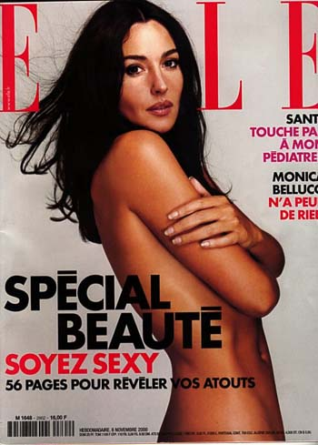

Irena, Monika, Grazia

Kupiš novine, dobiješ suknju, to je princip sa Graziom, koja od danas izlazi na srpskom. (A kako je prošlo svojevremeno pokretanje srpskog Cosmopolitana, pisala sam davno.)
Kao dugogodišnja čitateljka Gioe (i pre nego što sam naučila italijanski), nadobijala sam svakakvih poklona: kasete, šminka, kaiš, bluza, sat, neseser, rokovnik, šešir i sl. Sve je prilično brzo završilo u đubretu. Izuzev kasete sa italijanskim canzonama, to jest.
Glavna urednica Grazie je Irena Mišović, čime je rešen nespokoj kuda je nestala sa B92 i iz Glorije ('Kao kod kuće' je u međuvremenu takođe nestala sa TVa). "Otkako znam za sebe, sinonim za italijanski lifestyle kod nas je bila Grazia. Ovo je jedini časopis, koji je bio prisutan iz generacije u generaciju i, poput verne prijateljice iz Italije, ona je dugo bila jedini izvor modnih, kozmetičkih i enterijerskih tendencija od vremena Titovog socijalizma do ekonomskih sankcija.' Itd. To piše Irena u svom editorialu.
Imaju i dve strane posvećene nekoj proslavi u džet setu BGDa. Potpisi ispod fotografija su kao u staroj dobroj Gloriji, puno onih koji nisu krili zadovoljstvo, uživali su u dobrom provodu i opuštenom stilu.
Još ima Monika Beluči na naslovnoj strani i u intervjuu, i neki opšti tekstovi o modi, slavnima, hrani, zdravlju...
Cena je 175 din.
Bez Grazie No 1 svakako se može živeti, mada imaju vrlo simpatičnu nagradno-humanitarnu igru (prilog ide Dečijem selu), a jeftinijih suknji u gradu nema.
UPDATE: Šta se desilo nekoliko meseci kasnije
Komentari
Nista ne pominje
La Lara | 19.05.06 12:05
Eh, Monica, sta smo sve mogli mi, samo da sam ja bio Vincent Cassel...
 kiko | 19.05.06 17:24
kiko | 19.05.06 17:24
Je l' se ta Irena Misovic jos uvek neumereno smeje i osmehuje u emisijama koje vodi?
Grumpy Kitten | 19.05.06 19:54
E, a je l' vi kao gledate ko dobija najviše komentara i to?
Lusi | 21.05.06 08:54
Odgovor na prvo pitanje: O da. Odgovor na drugo pitanje: O da.
La Lara | 22.05.06 09:02
ovdje je urednica jedna novinarka koju sam godinama neobično cijenila. više je ne cijenim. iako sam joj beskrajno zahvalna što nam je otkrila misteriju zašto na vjenčanje random nogometaša i random manekenke ne dolaze njegovi roditelji.to se zove korisna informacija!
espadrila | 23.05.06 19:31
Espadrila, to deluje excitiiingg, nadam se da ce i kod nas biti takve vrste podataka!!
La Lara | 24.05.06 10:50
Espadrila, pa zasto? Da li ce ona sad videti ovaj komentar? Mene uzasno zanima ovo o vencanjima fudbalera i manekenke i nedolasku roditelja.
SD iz LA | 26.05.06 06:34
ne znam o mchemu se ovde radi , al bi bilo gotivno da mi neko od vas posalje e mail adress ove "novinarke" misovic , sad sam je gledao u nekoj stupidnoj emisiji , i ..ima dobre dude , ajde mail prosledite pa da joj dam shto shta na znanje , pa i to zashto roditelji fudbalera ne dolaze na venchanje istih sa manekenkom
akesandar | 21.06.06 12:42
Irena Misovic je najljepsa zena koju sam vidjela na nasim prostorima, mislim da je puna stila, profinjenosti i sto je najvaznije od svega unutrasnje ljepote.
Mislim da nije eksploatisana medijski na pravi nacin ali to je mozda iz razloga sto ne zeli da se previse eksponira niti da pravi skandale.
Ima puno stila i stvarnop je istinska ljepotica, ali do bola je lijepa i ako se malo potrudi srpska Ana Vintur.
Pozdrav za Irenu a Graziu sam samo jednom kupila zbog nekih japanki, i casti mi evo mi traju tri mjeseca.
Mima | 21.09.06 09:15
Ne zelim da moj komentar bude sav u superlativu,mada ce nekome tako i izgledati.Irena Misovic ...pametna,odmerena,zna sta zeli,i naravno u njoj se otkriva prava slovenska lepota...Sto se Grazie tice jako mi se dopada i kupujem je redovno svaki put u nadi da cu se pronaci na stranici br 18 u donjem desnom uglu gde ce pisati Radmila Kostic je dobitnik tasne srece(ha).Danas je nova GRAZIA u mojim rukama a kao poklon lep sal,esarpa ili sta vec,hvala Grazia,naslo se tu jos par pokloncica jos jednom hvala.Zelim samo da znate da ne kupujem ovaj magazin iskljucivo zbog poklona,ima tu mnogo lepih stvari pre svega kvalitetan papir,lepe fotke,puno korisnih informacija i saveta,edukativnost i ostalo.Draga Irena puno toplih pozdrava za tebe,Graziu i tvoj tim svaka cast najbolji ste.Grazia,Grazia.
Radmila Kostic | 22.11.06 15:11
 RSS feed
RSS feed
 sadržaji se objavljuju pod
sadržaji se objavljuju pod
Mmmmmmonicca... šta bi sa onim tračom da će glumeti sa Draganom Nikolićem u Poslednjem krugu u Monci part II?